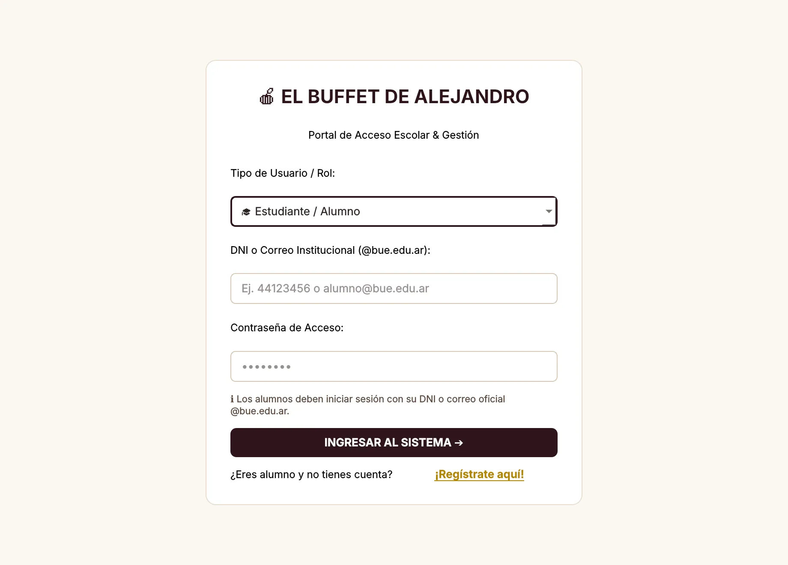
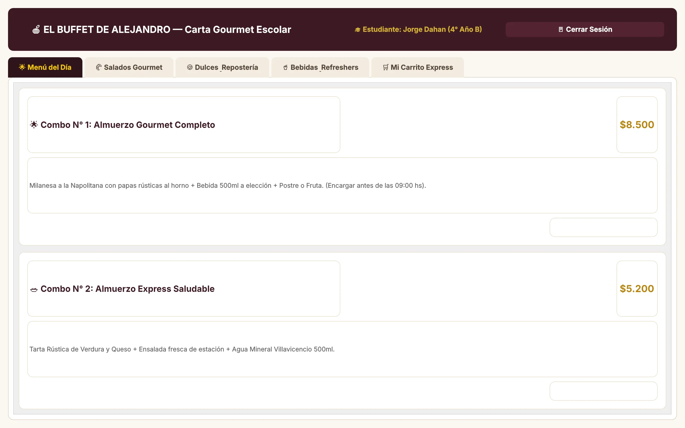
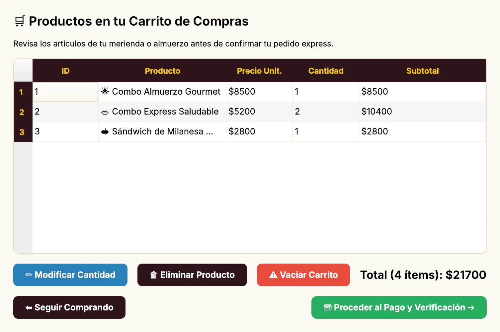
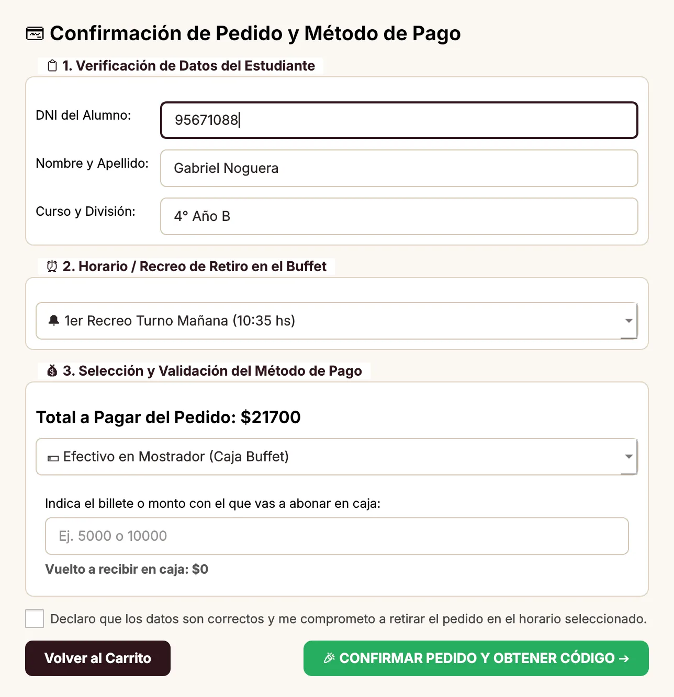
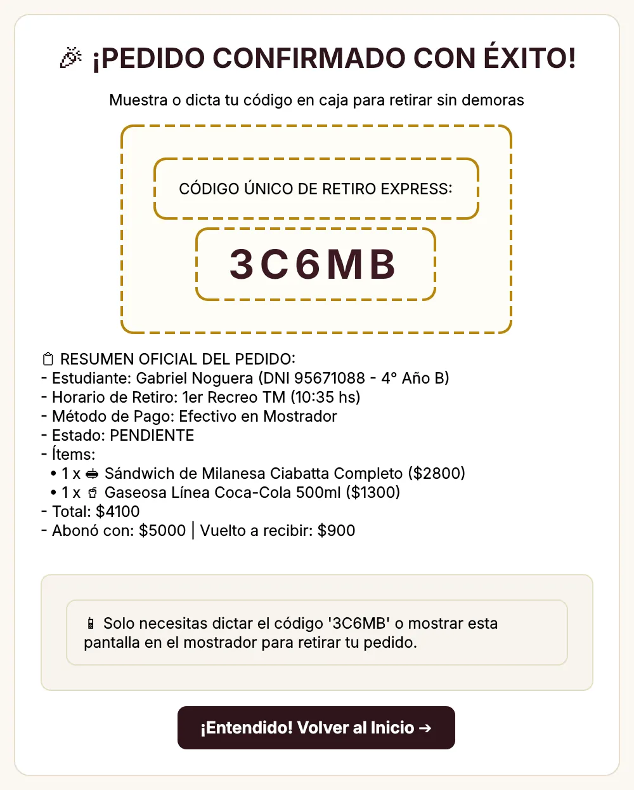
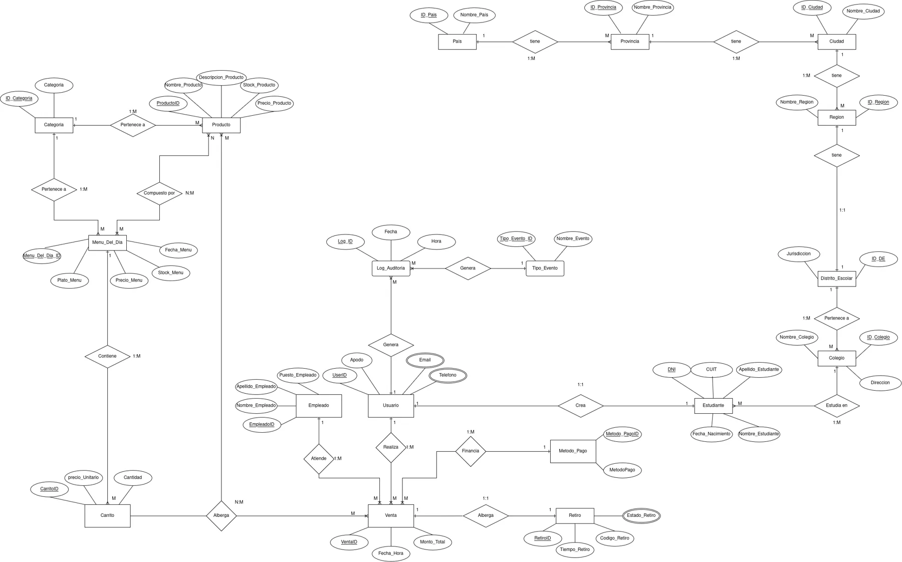

OrderEAT, Argentina
Una app creada por estudiantes por el caos de los recreos de su colegio. Pedido previo y retiro directo, sin pagar en el mostrador.
Más de US$ 2 millones procesados y decenas de colegios clientes.
Forbes Argentina
Proyecto Informático I y Bases de Datos
Pedí antes del recreo. Retirá en segundos con tu código.
Noguera y San Martín
Código único de retiro
Tiempo de compra medido en una compra normal, según la Matriz de Marco Lógico del proyecto.
Fuera del colegio pasa lo mismo: una fila larga hace que la compra no ocurra.
WaitWhile, encuesta 2023 · Chain Store Age, 2024
Un alumno le rompió la nariz a un compañero tras una pelea que empezó en la cola de la cantina, durante el recreo.
La Capital, Colegio San José de Rosario
La Resolución Conjunta 1490/2021 de Buenos Aires regula los buffets escolares para “evitar de esta manera la aglomeración” en los recreos.
Dirección General de Cultura y Educación y Ministerio de Salud de la Provincia de Buenos Aires.
Fluidez y atención rápida en el buffet durante los recreos
Una app creada por estudiantes por el caos de los recreos de su colegio. Pedido previo y retiro directo, sin pagar en el mostrador.
Más de US$ 2 millones procesados y decenas de colegios clientes.
Forbes Argentina
Estudiantes de ingeniería crearon pedidos agendados con retiro en casilleros inteligentes, porque muchos no llegaban a comprar entre clases.
Nació de las largas filas en los locales de la universidad.
Escuela de Ingeniería PUCV
Catálogo con stock real: si no hay, no se puede pedir.
Efectivo, saldo de cuenta escolar o Mercado Pago.
Lo dictás en caja y te entregan el pedido.
Se registra con DNI y correo @bue.edu.ar. Arma el carrito, paga y recibe su código.
Entra con legajo y un PIN de turno de 4 dígitos. Busca el código, entrega o anula con motivo.
Carga productos, cambia precios y stock, y revisa la auditoría de todo lo que pasó.
Consola técnica: prueba la conexión con MySQL y los procedimientos de la base.
Cada rol tiene su propia validación de ingreso: un alumno no puede entrar como cajero, ni al revés (SEG-07).





Barras a escala: 30 segundos frente a 7 minutos.
Validar el código lleva menos de 5 segundos. Un pedido entregado no se puede volver a entregar (CAJ-03).
NEG-02Máximo 10 unidades por producto en un pedido.
NEG-03No se puede pedir más de lo que hay en stock.
PAG-03En efectivo, el monto tiene que cubrir el total y el vuelto se calcula solo.
PAG-04Con saldo de cuenta escolar, se bloquea si no alcanza.
REG-03Solo se registran correos institucionales @bue.edu.ar.
CAJ-05Anular un pedido exige un motivo y devuelve el stock.
Son 6 de las más de 50 validaciones del sistema, todas listadas en docs/validaciones_sistema.md.
Producto, Categoria, Menu_Del_Dia, Carrito, Venta, Retiro, Metodo_Pago, Estado_Retiro, Detalle_Menu_Dia
Estudiante, Empleado, Usuario, Email, Telefono, Tipo_Evento, Log_Auditoria
Pais, Provincia, Ciudad, Region, Distrito_Escolar, Colegio
MySQL, en tercera forma normal. Si el servidor no responde, la app sigue funcionando con los mismos datos en memoria.

| El Buffet de Alejandro | App SaaS (OrderEAT) | Sistema POS | Manual y efectivo | |
|---|---|---|---|---|
| Retiro | Código de 5 caracteres | QR o notificación | Ticket impreso | Fila por llegada |
| Tiempo en caja | < 5 s de validación | Según la red | 15 a 30 s | 30 a 60 s |
| Stock | Descuento automático | Depende de la nube | Inventario general | A ojo |
| Auditoría | Log_Auditoria propio | En servidores ajenos | Cierre de caja | Ninguna |
| Costo | $0 en licencias | Comisión + abono | Licencia + hardware | Pierde 20–30 % de ventas |
Un sistema propio que saca la fila del recreo: menos de 30 segundos por alumno, sin licencias ni comisiones, y con cada operación registrada.
Código único de 5 caracteres por pedido.
Qt y MySQL Community: sin abono ni comisión por venta.
Ingresos, cobros y anulaciones, con fecha y hora.
Se actualiza en menos de 2 segundos después de cada venta.
| Qué buscamos | Cómo lo medimos | Cómo lo verificamos | |
|---|---|---|---|
| Fin | Mejorar la compra y venta en el buffet | Ventas +20–30 %, 5 min menos de espera, retención +50 % | Estadísticas de la base de datos |
| Propósito | Menos espera y menos amontonamiento | De 4–7 min a menos de 30 s por compra | Cronometraje en el recreo, en planilla |
| Componentes | App de reservas, cobro y base de stock | App, cobro y base funcionando | Prototipo en Figma, capturas y esquema |
| Actividades | Código, interfaz y base de datos | 20 h + 6 h + 12 h, costo $0 | Bitácora técnica del equipo |
+20 a 30 %
menos del 1 %
Barras grises: hoy, en el peor caso. Barras mostaza: la meta. Cada par está dibujado a su propia escala.
El código queda guardado en el dispositivo y se puede bajar como imagen.
Reintento automático, aviso inmediato y cobro manual de contingencia.
Catálogo en caché y más recursos en las horas pico.
La caja física usa la misma base de datos que los pedidos.
Afiches, enlace en las mesas y una promoción para el primer pedido.
Capacitación corta y una pantalla de caja de un solo paso.
Noguera y San Martín
Código, base de datos y documentos en github.com/gabrielnogueramelendez-cpu/Qt-creator-Berea